我的電腦配備史
1997
機型：南日（基本型，或者說淘汰邊緣規格。）
處理器：AMD K6 166MHz MMX
主記憶體：16MB EDO DRAM + 64MB（南日找人焊改主機板插上去的）
顯示卡：S3 Trio64V+ 2MB（ISA 介面）
硬碟：2GB（ATA 排線）
作業系統：Windows 95 OSR2（盜版）、Windows 98 SE（盜版）
鍵盤：雜牌
滑鼠：雜牌
手把：雜牌最便宜四鈕手把（大概壞了三個）、銀梭Ⅱ串接型可程式搖桿
印表機：HP 2000c/cxi
螢幕：雜牌 15 吋 CRT 螢幕、聯強 17 吋 CRT 螢幕
音效卡：ESS Solo-1、啟亨嗆紅小辣椒
差不多九八年代以後，硬體成長速度快到不行。有多快？短短三四年，處理器的速度就成長了超過十倍啊！一轉眼 800MHz 處理器的電腦，就變成淘汰機種，但我還在用 166MHz 的電腦玩遊戲、寫程式，過著艱辛的電腦生活 Orz
但也因為我電腦太爛，無法玩最新的遊戲，所以才會醉心於遊戲程式設計，夢想有一天自己就能寫遊戲來玩。也養成我電腦不是買來玩、而是買來學習技能的心態。
2001
機型：南日（專業玩家級）
處理器：AMD Athlon XP 1600+ (1400MHz)
主記憶體：128MB SDRAM
顯示卡：RIVA TNT2 32MB（AGPx8 介面）
硬碟：20GB（ATA 排線）
作業系統：Windows XP Professional Edition（盜版）、Windows XP Home Edition
鍵盤：多媒體鍵盤（不知道廠牌，PS2 接頭處有音訊插頭，本體可裝耳機和護墊。）
滑鼠：羅技迷你旋貂鼠、聯強超級光學鼠
手把：銀梭Ⅱ串接型可程式搖桿、A4Tech Wheel Gamepad、雜牌六鈕手把
印表機：HP Deskjet 656c
掃描器：Acer S2W 3300U
數位相機：Logitech ClickSmart 510
螢幕：捷元 15 吋液晶螢幕
出社會工作賺錢，第一件事就是買新電腦 XDDD
還陸續買了新印表機、掃描器、數位相機，以及生平第一次買正版 Windows 來安裝。
2003
機型：聯強 MiTAC
處理器：Intel Celeron CPU 2.80GHz
主記憶體：1GB DDR SDRAM
顯示卡：ATI Radeon 9200 SE 64MB（AGPx8 介面）
NVIDIA GeForce 7300GT 256MB DDR2（AGPx8 介面）
硬碟：40GB 兩顆（ATA 排線）
作業系統：Windows XP Home Edition
鍵盤：微軟舒適曲線鍵盤 2000
滑鼠：雙飛燕 X7 變速威龍（X-710 紅）、Logitech MX518 玩家級光學滑鼠
手把：雜牌仿 PS2 雙類比搖桿手把（USB）
印表機：Epson Stylus C45
螢幕：捷元 15 吋液晶螢幕、Acer AL1706 LCD 17 吋螢幕
開始覺得找店家組裝的電腦容易壞掉，加上不想等兩三天才能拿貨，所以到順發 3C 量販買直接就能搬回家的品牌電腦。
品牌電腦確實耐用多了！這台用超過十年還能用，只換過周邊零件而已～
來談一下印表機，因為嫌 HP 原廠墨水太貴，所以我換 Epson 試試看。結果就算用的是原廠墨水，噴嘴也很容易阻塞，結果我看三分之一的墨水都拿來清理噴嘴有吧？嘔死了！
2010
機型：Acer Aspire 4736ZG
處理器：Intel Pentium Dual Core T4300 2.1GHz
主記憶體：4GB DDR2 SDRAM
顯示卡：NVIDIA GeForce GT105M 512MB
硬碟：500GB（SATA）
作業系統：Windows 7 家用進階版、Lubuntu 13.10
鍵盤：微軟舒適曲線鍵盤 2000
滑鼠：A4TECH 奧斯卡全速遊戲激光鼠 XL-730K (鐮刀訣)
手把：Windows 專用 XBOX 360 控制器 (白)
印表機：Canon iP1880
螢幕：外接 Acer P195HQL LED 18.5 吋寬螢幕
因為都 2009 年了，我還沒摸過筆記型電腦，加上很想玩看看 Windows Vista 作業系統，所以生日的時候買了這台送給自己當禮物。
有了這台，不但可以玩《無雙 Orochi Z》，中華網龍的免月費武俠線上遊戲也雙開得很順暢～
再來談印表機，Canon iP1880 是我這輩子用過最滿意的產品！我曾超過半年沒開機，再搬出來印時，墨水匣居然沒阻塞，印得漂漂亮亮；但請勿模仿，說不定只是個案。而且原廠墨水真材實料，是我用過能印最多張數的，至少我不曾有過被坑的感覺[1]。雖然有計數控制，但我的情況是，當系統提醒說差不多要換時，我會選擇繼續印且不再提醒[2]，然後把墨水印到榨乾為止，並沒有明明還能印，卻強迫你換墨水匣的情形。
2013
機型：Lenovo G580 (20150)
處理器：Intel Core i5-3210M 2.50GHz
主記憶體：8GB DDR3 SDRAM
顯示卡：NVIDIA GeForce GT635M 2GB + Intel HD Graphics 4000
硬碟：500GB（SATA）
作業系統：Windows 8、Windows 8.1、Windows 10 家用版
鍵盤：微軟舒適曲線鍵盤 3000
滑鼠：A4TECH 奧斯卡全速遊戲激光鼠 XL-730K (鐮刀訣)、D9 紫龍針光遊戲鼠 D-708X
手把：Windows 專用 XBOX 360 控制器 (白)
印表機：Canon iP1880
數位相機：Canon SX40 HS
螢幕：外接 Acer P195HQL LED 18.5 吋寬螢幕 + 內建 15.6 吋寬螢幕（延伸雙螢幕）
宏碁筆電剛過保固期就無法開機[3]，只好先退回用聯強桌機，等半年後 Windows 8 上市再敗一台 Core i 處理器的電腦給自己當生日禮物～
買來最興奮的是可以正常玩 GTA4，不用再特效全「關」。
附帶一提，2016 年硬碟故障率最低的是 HGST，最高的是 Seagate 且被集體控訴賠償。但我的 Acer Aspire 4736ZG 硬碟就是 Hitachi，最大問題就是早已壞軌，開機或執行程式都慢到不行。我的 Lenovo G580 硬碟是 Seagate，已過保固期快兩年，現在還是好好的。所以買硬碟看品牌？看人品吧！有我這麼極端的例子嗎？
另外，我的 Acer Aspire 4736ZG 一過保固期就無法開機，後來可以開機了，但硬碟壞軌，且容易斷電，問題一堆。而我現在用的 Lenovo G580 快四年了，開關機超過 3000 次來，只發生過兩次關機後並未斷電的問題[4]，沒有發生過其它狀況。但 Lenovo 有官方間諜程式的問題，會監控使用者的行為，將資料傳回中國，Lenovo 有淪為中國政府情報機構的嫌疑，所以雖然我很滿意這台 G580，但下次要買電腦的話，還是不會選擇 Lenovo～
2021
機型：ROG Zephyrus G15 (GA502IV)
處理器：AMD Ryzen 9 4900HS 3.0 GHz
主記憶體：16GB DDR4 3200
顯示卡：NVIDIA GeForce RTX 2060 6GB GDDR6
硬碟：512GB M.2 NVMe PCIe 3.0 SSD
作業系統：Windows 10 家用版
鍵盤：Logitech G213 PRODIGY RGB 電競鍵盤
滑鼠：Logitech B170 無線滑鼠（因為 ROG Strix Impact 滑鼠缺貨改送電源供應器）
手把：Logitech F310 遊戲控制器
螢幕：內建 15.6 吋寬螢幕
在建築事務所當建築師的弟弟送我一台電競筆電，說是公司尾牙抽獎的電腦，但一些蛛絲馬跡來看，我覺得是他自己買的 XD
打趴 Core i 系列的 Ryzen 9 4000 系列處理器 + 光線追蹤顯示卡，我超喜歡這台的！喜歡的不是性能，而是品味～
由於我使用電腦最大的樂趣是寫程式，不是玩遊戲，所以我房間繼續用 Lenovo G580，這台 ROG Zephyrus G15 放在樓下客廳全家一起用。
平常都用兩萬出頭的低階電腦，這還是我第一次用四萬多的電腦。
懷舊展示…對我來說
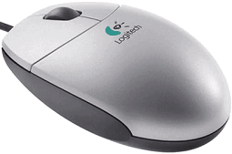
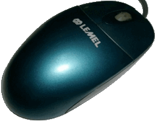
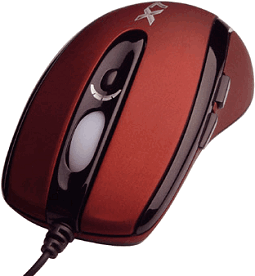
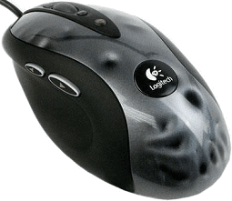
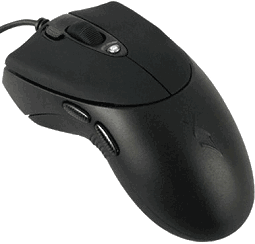
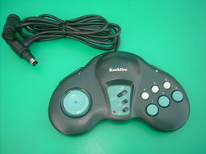
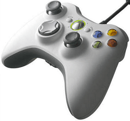
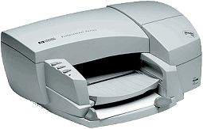
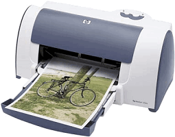
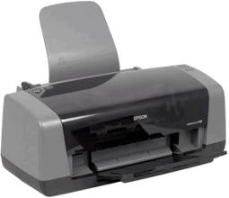
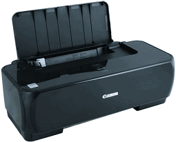